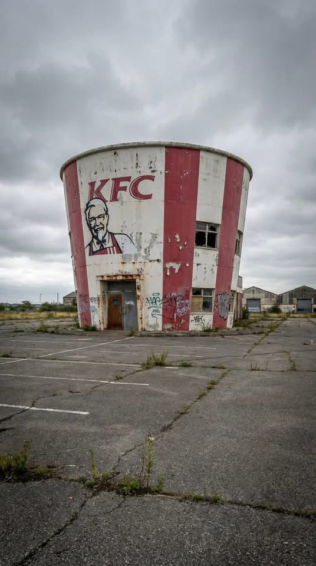
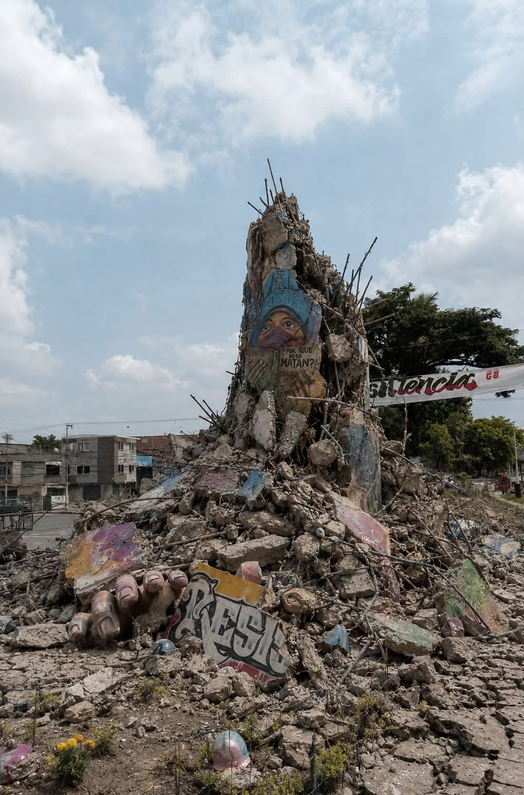
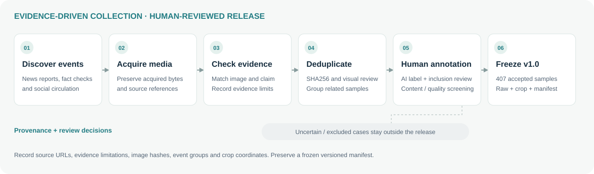
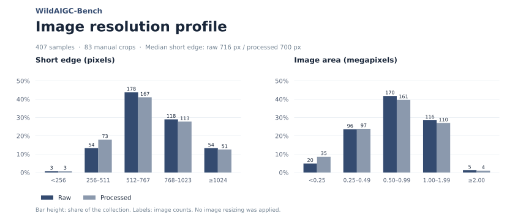
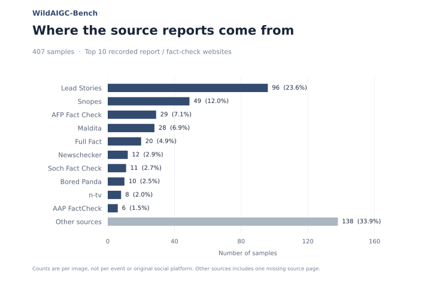

VERSION 1.0 · 407 HUMAN-REVIEWED IMAGES
WildAIGC-Bench
A hard test for AI-generated image detection
in real-world online circulation.
Photographic-looking AI-generated and edited images connected to news events and social media claims. Collected from the web, reviewed by humans, and preserved for reproducible evaluation.
Dataset upload underway · Technical report in preparation · Evaluation snapshot: 12 October 2026
407accepted AI images
2raw / processed versions
83manually cropped images
8detectors tested on WildAIGC
01 / OVERVIEW
Strong benchmark scores.
A harder reality.
Does performance on existing benchmarks carry over to evidence-linked images encountered in actual online circulation?
Detection benchmarks often evaluate clean generator outputs or simulated degradations. Images encountered online arrive through reposts, publisher reproductions, screenshots and other acquired forms.
WildAIGC-Bench focuses on realistic-looking synthetic content connected to documented events and claims. Its first release contains 407 human-accepted AI images, with source references, evidence summaries and explicit limitations.
The set is positive-only. It measures AI-image recall; a separate real-image reference is needed for false-positive rates or complete binary-classification metrics. Complete compression histories are not inferred.
02 / THE DATASET
Context is part of the evidence.
Source pages, circulation references and evidence limitations accompany each accepted image. The detector input remains the image alone.

Selected accepted examples shown in their processed versions. All four targets are annotated as AI-generated or edited; these are not real-image controls.
The acquired online file.
Original collected bytes, including any existing comments, platform interfaces, identifiers, captions or generation marks. An acquired online file is not necessarily the generator’s earliest output.
The region under examination.
Human-selected rectangular crops focus on the target image and remove surrounding comments, generation watermarks, platform identifiers or other cues where cropping permits. No inpainting, enhancement or resizing.
83 cropped · 324 unchanged. Crops are pixel-exact regions from raw, saved losslessly. Uncropped raw and processed files are byte-identical. Some cues can remain; processed does not mean completely free of leakage.
03 / CONSTRUCTION
From a circulating claim
to a frozen evaluation sample.
A documented workflow joins media discovery, provenance checks and human decisions, with a separate release admission gate.

Preserve the evidence
Record the acquired image, source URLs and available generative evidence. Fact-check conclusions and reported forensic tests remain attributed to their sources.
Separate collection from acceptance
Review image–claim correspondence, final AI labels and inclusion decisions. Screen duplicates, sensitive content, low-quality assets and unsuitable creative examples.
Keep the release traceable
Preserve raw bytes, group related samples, retain crop coordinates and freeze file hashes in a versioned manifest. Additional collection belongs to future releases.
04 / DATA PROFILE
What is in the first release?
Statistics computed from the frozen 407-image manifest. Each count refers to images, not independent events.


Download statistics JSON ↗407 images · 406 recorded source pages · 78 normalized source hostnames
05 / DETECTOR EVALUATION
Compare like with like.
AI-image recall on ITW-SM and WildAIGC. Existing benchmark performance does not directly predict detection of this difficult set.
AI-image recall
Seven methods with results on both sets
ITW-SM WildAIGC processed
Positive class: AI-generated / edited. Values reflect the supplied snapshot; model versions, thresholds and preprocessing will be documented in the technical report. SAFE has low recall on both sets.
All completed evaluations
Download results JSON ↗WildAIGC-Bench
407 AI images × 2 versions · 8 methods completed| 方法 | Raw recall | Processed recall | Δ (proc − raw) | Recall (raw) | Recall (proc) | unknown% |
|---|---|---|---|---|---|---|
| DRCT | 0.2948 | 0.2899 | -0.0049 | 0.2948 | 0.2899 | 0.00 |
| SAFE | 0.0246 | 0.0197 | -0.0049 | 0.0246 | 0.0197 | 0.00 |
| DDA | 0.3538 | 0.3636 | +0.0098 | 0.3538 | 0.3636 | 0.00 |
| AIDE | 0.1450 | 0.1843 | +0.0393 | 0.1450 | 0.1843 | 0.00 |
| PE-336 (best) | 0.1941 | 0.2015 | +0.0074 | 0.1941 | 0.2015 | 0.00 |
| PE-518 (best) | 0.2236 | 0.2310 | +0.0074 | 0.2236 | 0.2310 | 0.00 |
| FakeVLM | 0.5283 | 0.5405 | +0.0123 | 0.5283 | 0.5405 | 0.25 |
| Qwen3.6-35B(API) | 0.3661 | 0.3563 | -0.0098 | 0.3661 | 0.3563 | 0.00 |
Positive-only set: accuracy equals AI-image recall. AUC, FPR and TNR are not applicable. Δ values are decimal differences. BusterX++ and Veritas++ pending.
ITW-SM
10,000 images · 5,000 real + 5,000 AI · 7 methods completed| 方法 | acc | auc | recall | precision | f1 | fpr | tnr | unknown% |
|---|---|---|---|---|---|---|---|---|
| DRCT | 0.7296 | 0.7952 | 0.5982 | 0.8114 | 0.6887 | 0.1390 | 0.8610 | 0.00 |
| SAFE | 0.4986 | 0.4953 | 0.0084 | 0.4286 | 0.0165 | 0.0112 | 0.9888 | 0.00 |
| DDA | 0.8723 | 0.9410 | 0.8454 | 0.8935 | 0.8688 | 0.1008 | 0.8992 | 0.00 |
| AIDE | 0.6234 | 0.6726 | 0.4308 | 0.7007 | 0.5336 | 0.1840 | 0.8160 | 0.00 |
| PE-336 (best) | 0.8415 | 0.9073 | 0.8028 | 0.8701 | 0.8351 | 0.1198 | 0.8802 | 0.00 |
| PE-518 (best) | 0.9132 | 0.9607 | 0.8840 | 0.9388 | 0.9106 | 0.0576 | 0.9424 | 0.00 |
| Qwen3.6-35B(API) | 0.9280 | N/A | 0.9306 | 0.9258 | 0.9282 | 0.0746 | 0.9254 | 0.00 |
FakeVLM, BusterX++ and Veritas++ pending. External comparison dataset; its image files are not redistributed here.
Six benchmarks · full
346,722 images · 6 CV / PE methods| 方法 | EvalGen · standard | AIGIBench · ITW | Chameleon · ITW | SynthWildx · ITW | WildRF · ITW | RRDataset · ITW | MACRO acc | MACRO auc | MACRO recall | MACRO f1 | n |
|---|---|---|---|---|---|---|---|---|---|---|---|
| DRCT | 0.5093 | 0.7595 | 0.7056 | 0.6659 | 0.6821 | 0.6040 | 0.6544 | 0.7666 | 0.5333 | 0.6440 | 346722 |
| SAFE | 0.0110 | 0.7735 | 0.5919 | 0.2426 | 0.7007 | 0.4991 | 0.4698 | 0.6290 | 0.1976 | 0.2471 | 346722 |
| DDA | 0.9685 | 0.8500 | 0.8405 | 0.9186 | 0.8773 | 0.7116 | 0.8611 | 0.9038 | 0.7821 | 0.8419 | 346722 |
| AIDE | 0.5626 | 0.8114 | 0.6695 | 0.5794 | 0.6772 | 0.5744 | 0.6458 | 0.7548 | 0.4791 | 0.5990 | 346722 |
| PE-336 (best) | 0.9996 | 0.9360 | 0.8933 | 0.9236 | 0.9787 | 0.8856 | 0.9362 | 0.9798 | 0.8969 | 0.9326 | 346722 |
| PE-518 (best) | 0.9997 | 0.9487 | 0.9217 | 0.9523 | 0.9935 | 0.9069 | 0.9538 | 0.9859 | 0.9233 | 0.9515 | 346722 |
One standard benchmark (EvalGen) and five in-the-wild benchmarks. Dataset columns report accuracy; macro columns report equal-weight summaries. EvalGen is positive-only.
Six benchmarks · sampled
11,615 images · 12 methods| 方法 | EvalGen · standard | AIGIBench · ITW | Chameleon · ITW | SynthWildx · ITW | WildRF · ITW | RRDataset · ITW | MACRO acc | MACRO auc | MACRO recall | MACRO f1 | unknown% |
|---|---|---|---|---|---|---|---|---|---|---|---|
| DRCT | 0.5215 | 0.7580 | 0.7125 | 0.6659 | 0.6821 | 0.6210 | 0.6602 | 0.7703 | 0.5433 | 0.6525 | 0.00 |
| SAFE | 0.0115 | 0.7785 | 0.5960 | 0.2426 | 0.7007 | 0.4980 | 0.4712 | 0.6258 | 0.1980 | 0.2502 | 0.00 |
| DDA | 0.9635 | 0.8555 | 0.8335 | 0.9186 | 0.8773 | 0.7130 | 0.8602 | 0.9056 | 0.7822 | 0.8417 | 0.00 |
| AIDE | 0.5665 | 0.8130 | 0.6640 | 0.5794 | 0.6778 | 0.5675 | 0.6447 | 0.7560 | 0.4734 | 0.5938 | 0.00 |
| PE-336 (best) | 1.0000 | 0.9290 | 0.8895 | 0.9236 | 0.9787 | 0.8775 | 0.9331 | 0.9802 | 0.8913 | 0.9288 | 0.00 |
| PE-336 (swa) | 0.9995 | 0.9245 | 0.9015 | 0.9439 | 0.9885 | 0.8980 | 0.9427 | 0.9815 | 0.9136 | 0.9397 | 0.00 |
| PE-518 (best) | 1.0000 | 0.9435 | 0.9195 | 0.9523 | 0.9935 | 0.9020 | 0.9518 | 0.9855 | 0.9189 | 0.9491 | 0.00 |
| PE-518 (swa) | 1.0000 | 0.9425 | 0.9275 | 0.9562 | 0.9896 | 0.9115 | 0.9546 | 0.9864 | 0.9293 | 0.9528 | 0.00 |
| FakeVLM | 0.9900 | 0.8100 | 0.7100 | 0.8478 | 0.7432 | 0.6555 | 0.7928 | N/A | 0.8983 | 0.8155 | 0.23 |
| BusterX++ | 0.9290 | 0.7270 | 0.7460 | 0.9175 | 0.9449 | 0.7070 | 0.8286 | N/A | 0.7573 | 0.8090 | 0.00 |
| Veritas++ | 0.9890 | 0.7800 | 0.8535 | 0.8933 | 0.8980 | 0.7625 | 0.8627 | N/A | 0.8717 | 0.8640 | 0.02 |
| Qwen3.6-35B(API) | 0.8775 | 0.6990 | 0.7525 | 0.8815 | 0.9395 | 0.7380 | 0.8147 | N/A | 0.7079 | 0.7899 | 0.00 |
Stratified sampling: up to 2,000 images per benchmark. Keep sampled and full evaluations separate. Two more standard benchmarks are planned; no results are implied for them.
Reading these results
- WildAIGC is positive-only: reported accuracy equals AI-image recall. Do not compare it directly with accuracy on mixed real / AI sets.
- Six-benchmark tables include one standard benchmark (EvalGen) and five in-the-wild benchmarks (AIGIBench, Chameleon, SynthWildx, WildRF, RRDataset). Two more standard benchmarks are planned.
- Label-only methods have no continuous score: AUC is N/A. Unknown responses are counted as real / pass-through and reported separately.
- Across all eight WildAIGC methods, processed-minus-raw recall averages about +0.71 percentage points. Only 83 images were cropped; this does not establish that detectors ignore peripheral cues.
06 / RESOURCES
Use the data. Inspect the context.
A versioned dataset, documented evidence and results you can examine.
WildAIGC-Bench v1.0
407 images with raw / processed files, labels, 14 core metadata fields and a separate reproduction manifest.
Open Hugging Face ↗Upload underwayConstruction & evaluation
Collection, verification, annotation, data analysis and complete detector settings.
In preparationITW-SM
Full real / AI benchmark used for comparison. Obtain access from its authors; files are not redistributed here.
Official access page ↗Release and citation
The original annotations and documentation are CC BY 4.0 to the extent of the maintainers’ rights. Third-party images are not granted a blanket image license; see the dataset’s LICENSE and source references.
Formal paper citation will be added with the technical report. For now, cite WildAIGC-Bench v1.0, its repository URL and the exact revision. Corrections and rights concerns can be raised through repository issues.
Updated 12 October 2026. Dataset release frozen; measurements are a snapshot. BusterX++ / Veritas++ on WildAIGC, and three local large models on ITW-SM, remain pending.